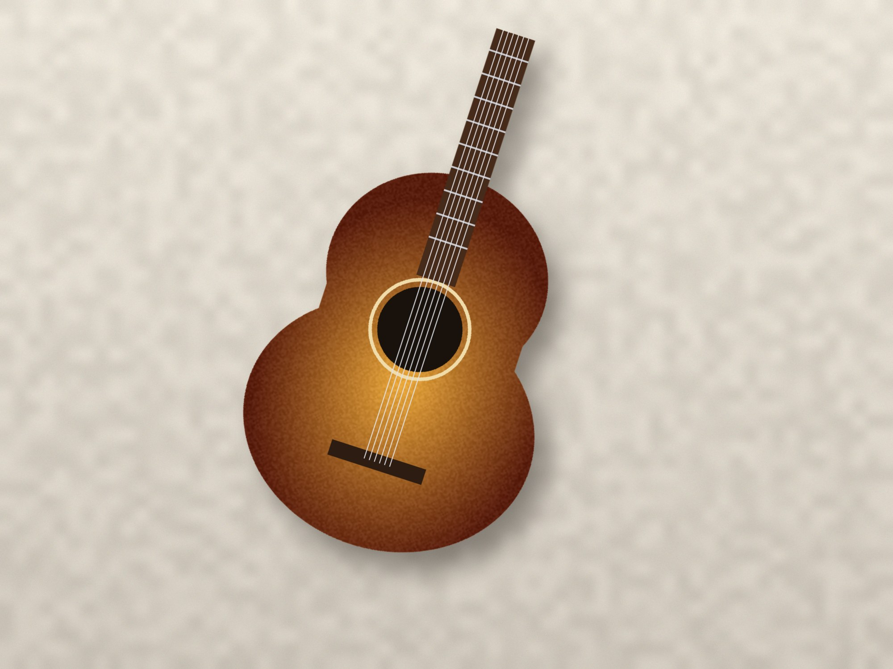
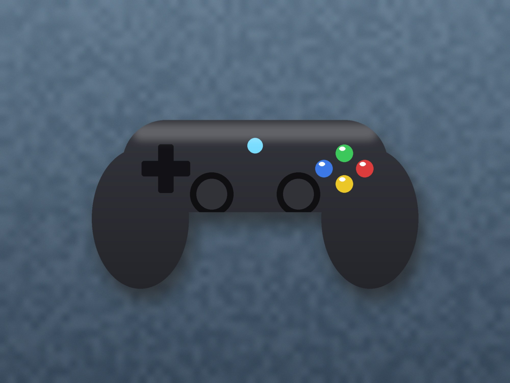
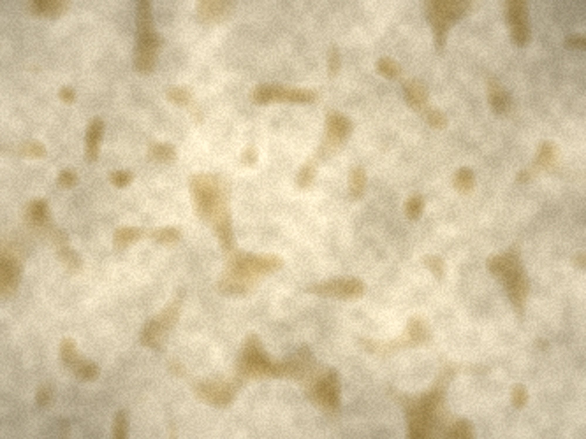

0223 · Aplicaciones ofimáticas · Tema 3 (4 de 6)
Tema 3.4 — Capas, selecciones y texto
Qué se evalúa · RA y criterios
Resultado de aprendizaje
RA5. Manipula imágenes digitales analizando las posibilidades de distintos programas y aplicando técnicas de captura y edición básicas.
Criterio de evaluación que trabaja este subtema:
- d) Se han empleado herramientas para la edición de imagen digital.
Material para practicar
Imágenes inventadas para este subtema. Guárdalas en
Tema3_Proyecto/trabajo/originales.






Enlaces directos: Guitarra para recortar · Mando para recortar · Textura de papel viejo. También usarás el paisaje que retocaste en el subtema 3.3.
1. Capas
Una imagen con capas es como un montón de láminas
transparentes apiladas: en cada una hay una cosa (el fondo, una foto,
un texto) y lo de arriba tapa a lo de abajo. Puedes mover, cambiar o esconder
cada lámina sin estropear las demás. Por eso se trabaja en .xcf:
es el único formato que guarda las capas de GIMP.
El diálogo Capas
Ventanas > Diálogos empotrables > Capas
(Ctrl+L). Cada fila es una capa:
- El ojo la muestra u oculta.
- La cadena enlaza capas para moverlas juntas.
- Arriba del diálogo, el modo de fusión y la opacidad de la capa activa.
- Abajo, los botones para crear, subir, bajar, duplicar, anclar y borrar capas.
- Doble clic en el nombre para renombrarla. Pon nombres claros («fondo», «guitarra», «título»): con diez capas llamadas «Capa copia #3» no se encuentra nada.
Órdenes que vas a usar siempre
| Para | Orden |
|---|---|
| Traer otra imagen como capa | Archivo > Abrir como capas (Ctrl+Alt+O) o arrastrarla desde el Explorador |
| Capa nueva vacía | Capa > Capa nueva (Mayús+Ctrl+N), con relleno Transparencia |
| Mover una capa | Herramienta Mover (M). En sus opciones, marca Mover la capa activa: si no, mueve la capa que haya debajo del ratón |
| Cambiar el tamaño o girar una capa | Transformación unificada (Mayús+T) o Escalar (Mayús+S) |
| Que una capa admita transparencia | Capa > Transparencia > Añadir canal alfa (las fotos JPG no lo traen) |
| Que la capa ocupe toda la imagen | Capa > Capa a tamaño de imagen |
| Juntar todas las capas en una | Imagen > Aplanar imagen. Solo al final, en una copia: después ya no hay capas |
Modos de fusión
El modo dice cómo se mezcla la capa con lo que tiene debajo. Los cuatro más útiles:
| Modo | Qué hace | Para qué |
|---|---|---|
| Normal | Tapa lo de debajo | Casi todo |
| Multiplicar | Solo oscurece; el blanco desaparece | Texturas, sombras, un dibujo a lápiz sobre una foto |
| Pantalla | Solo aclara; el negro desaparece | Luces, brillos, humo |
| Superponer | Oscurece lo oscuro y aclara lo claro | Dar contraste y teñir con una textura o un color |
2. Seleccionar
Una selección es la zona en la que vas a trabajar: lo que pintes, borres, copies o ajustes solo afecta a lo que está dentro. Se ve con una línea discontinua que se mueve (las «hormigas»).
| Herramienta | Tecla | Cómo selecciona | Para |
|---|---|---|---|
| Selección rectangular | R | Un rectángulo | Franjas, recuadros, recortar zonas |
| Selección elíptica | E | Una elipse (con Mayús mientras arrastras, un círculo) | Formas redondas |
| Selección libre (lazo) | F | Clic a clic hace tramos rectos; arrastrando, a mano alzada. Intro la cierra | Objetos con bordes rectos o irregulares |
| Tijeras inteligentes | I | Pones puntos en el borde y se pegan solos a él | Objetos con buen contraste con el fondo |
| Selección difusa (varita) | U | Un clic coge la zona continua de color parecido. El umbral dice cuánto de parecido | Fondos lisos |
| Selección por color | Mayús+O | Como la varita, pero en toda la imagen, aunque no esté junto | Un color que se repite (el cielo entre las ramas) |
Combinar selecciones
Pulsa la tecla antes de hacer clic:
- Mayús: añade a la selección que ya tienes.
- Ctrl: resta.
- Mayús+Ctrl: deja solo la parte común.
El menú Seleccionar
- Todo (Ctrl+A) y Ninguno (Mayús+Ctrl+A). Si algo «no hace nada», casi siempre es que hay una selección olvidada en otro sitio.
- Invertir (Ctrl+I): truco clásico. Seleccionas el fondo liso con la varita, inviertes y tienes el objeto.
- Difuminar: suaviza el borde unos píxeles para que el recorte no quede «pegado». Con 1 o 2 px suele bastar.
- Encoger y Agrandar: mueven el borde hacia dentro o hacia fuera. Encoger 1 px quita el halo del fondo que a veces queda alrededor.
Máscara rápida: retocar la selección pintando
Con Mayús+Q la zona sin seleccionar se tiñe de rojo. Ahora pintas con el pincel: en blanco añades a la selección y en negro quitas. Vuelve a pulsar Mayús+Q y vuelven las hormigas. Es la forma más cómoda de arreglar los bordes difíciles.
Copiar y pegar sin líos
Para llevar lo seleccionado a otra imagen o a otra capa, copia
(Ctrl+C) y usa Editar > Pegar como > Capa
nueva. Si en el diálogo Capas te aparece una Selección
flotante, conviértela con Capa > A capa nueva: mientras
está flotando no puedes hacer casi nada más.
3. Máscaras de capa
Para quitar el fondo de un objeto podrías borrarlo con la goma, pero si te equivocas ya no hay vuelta atrás. La máscara de capa esconde en lugar de borrar:
Capa > Máscara > Añadir máscara de capa. Si tienes una selección hecha, elige Selección y lo de fuera desaparece al momento.- En la máscara, el blanco muestra y el negro oculta. Los grises dejan la capa a medias.
- Haz clic en la miniatura de la máscara (en el diálogo Capas) y pinta en ella con el pincel en blanco o en negro para arreglar el borde.
- Con un degradado (G) de negro a blanco sobre la máscara, una imagen se funde poco a poco con la de debajo. Así se hacen los fundidos y las dobles exposiciones.
4. Texto
Con la herramienta Texto (T) haces clic donde quieres el texto y escribes. Cada texto va en su propia capa de texto, que se puede volver a editar: selecciónala y haz clic encima con T.
- En las opciones: tipografía, tamaño (en píxeles), color, alineación, interlineado y espaciado entre letras.
- Para cambiar solo unas letras, selecciónalas en el lienzo y usa la barrita que aparece encima del texto.
- Si pintas o aplicas un filtro sobre una capa de texto, GIMP la convierte en una capa normal y deja de ser editable. Duplica la capa de texto antes si vas a hacer efectos.
Que se lea
- Contraste: texto claro sobre zona oscura o al revés. Si la foto de detrás tiene de todo, pon debajo del texto una franja negra al 50 % de opacidad.
- Sombra:
Filtros > Luz y sombra > Sombra arrojada, discreta, separa el texto del fondo. - Máximo dos tipografías por pieza: una llamativa para el título y una sencilla para el resto.
- Tamaño: una miniatura de YouTube se ve en el móvil a unos pocos centímetros. Aleja la vista (-) hasta verla de ese tamaño: si no lees el título, es pequeño.
Tipografías nuevas
Las tipografías también tienen licencia. Las de
Google Fonts son libres (licencia OFL) y se pueden usar en
cualquier trabajo. Para instalar una en Windows, descomprime el ZIP, clic
derecho en el archivo .ttf > Instalar: se
instala solo para tu usuario y no pide contraseña de administrador. Después,
en GIMP, pulsa el botón de recargar del diálogo Tipografías o reinicia
el programa.
5. Componer una pieza
- Jerarquía: una cosa es lo más importante (el nombre del grupo, el título del juego) y se ve primero, grande. Lo demás, más pequeño.
- Regla de los tercios, como al recortar: lo importante en una línea o un cruce, no siempre en el centro.
- Margen de seguridad: deja aire en los bordes. En la miniatura de YouTube, la esquina inferior derecha la tapa la duración del vídeo.
- Guías: arrastra desde las reglas para crear guías y
alinear.
Imagen > Guías > Guía nueva (en porcentaje)pone una justo al 50 %. La herramienta Alineación (Q) centra capas respecto a la imagen. - Pocos colores: los de la paleta de tu proyecto (bloque 3.1).
Un logotipo desde el boceto
- Imagen nueva de 1000 × 1000 con relleno transparente.
- Abre el boceto limpio como capa y bájale la opacidad al 30 %: es tu plantilla para calcar.
- En capas nuevas encima, construye las formas con selecciones (rectángulos
y elipses que sumas y restas) y rellénalas: arrastra el color de primer plano
dentro de la selección o usa
Editar > Rellenar con el color de frente. - Añade el texto, oculta el boceto y guarda el
.xcf.
Los logotipos profesionales se hacen en programas vectoriales como Inkscape, para poder ampliarlos sin límite. Con 1000 × 1000 px en GIMP tienes de sobra para web, redes y documentos.
6. Prácticas del subtema
Acreditan el criterio d (herramientas de edición). Entrega en cada
una el .xcf y, en el documento de Word, una captura del resultado
y otra del diálogo Capas con las capas bien nombradas.
- P3.4.1 · Recortar un objeto. Recorta la guitarra o el mando sin su sombra, usando al menos dos herramientas de selección combinadas (por ejemplo, varita e invertir, y lazo para restar la sombra). Aplica la selección como máscara de capa, pon el objeto sobre la textura de papel y dale una sombra nueva con Sombra arrojada. Explica qué herramientas has usado y por qué.
- P3.4.2 · Modos de fusión. Sobre tu paisaje retocado del 3.3, pon la textura de papel en Multiplicar o Superponer y una capa con un degradado de color en Pantalla, a la opacidad que te guste. Exporta tres capturas con modos distintos y explica la diferencia.
- P3.4.3 · Fundido con máscara. Funde el objeto recortado de la P3.4.1 con el paisaje: añade una máscara a la capa de arriba y aplica un degradado de negro a blanco para que una imagen se vaya convirtiendo en la otra.
- P3.4.4 · Miniatura con texto. Crea una miniatura de 1280 × 720 con una de las composiciones anteriores, un título y una línea secundaria (dos tipografías como máximo). El título tiene que leerse con la vista alejada al 25 %: incluye esa captura.
7. Comprueba lo que has entendido
Ocho preguntas. No cuenta para la nota: es para que veas si puedes seguir.